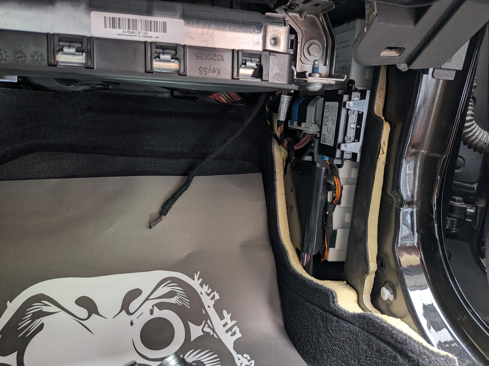
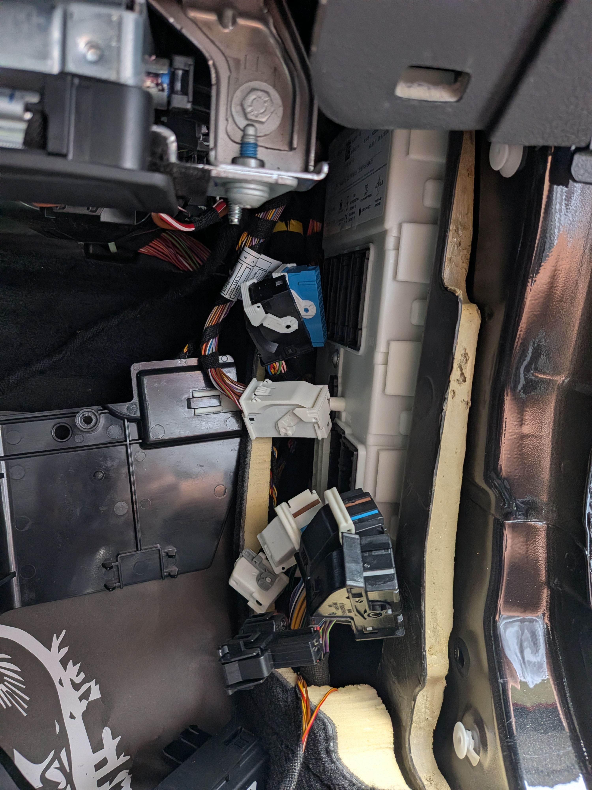

CarKey ProCore 汽車鑰匙服務紀錄
BMW 車況安全確認：不公開操作細節
BMW 車系鑰匙與啟動問題牽涉車輛安全，公開頁面只保留車主需要理解的判斷方向。實際處理會依車款年份、車況與身分資料確認後安排，不公開設備、操作流程或可被照做的技術細節。


CarKey ProCore 汽車鑰匙服務紀錄
BMW 車系鑰匙與啟動問題牽涉車輛安全，公開頁面只保留車主需要理解的判斷方向。實際處理會依車款年份、車況與身分資料確認後安排，不公開設備、操作流程或可被照做的技術細節。

